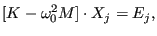
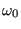
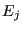
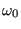
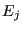

Next: Convergence criteria Up: Types of analysis Previous: Sensitivity Contents
With the *GREEN keyword card Green functions  can be calculated satisfying
can be calculated satisfying
|  | (473) |
where  is the stiffness matrix of the structure, the mass matrix,
 a scalar frequency and  a unit force at degree of freedom
is the stiffness matrix of the structure, the mass matrix,
 a scalar frequency and  a unit force at degree of freedom
 . The degree of freedom
. The degree of freedom  corresponds to a specific coordinate direction
in a specific node. For
corresponds to a specific coordinate direction
in a specific node. For
 the Green function is the static answer of a system
to a unit force at some location in one of the global coordinate directions. Usually, these Green functions are used in
subsequent calculations. The Green function procedure is a linear perturbation
procedure, i.e. nonlinear behavior from a previous *STATIC step can be taken
into account (through the appropriately modified stiffness matrix) using the PERTURBATION parameter on the *STEP card in the Green step.
the Green function is the static answer of a system
to a unit force at some location in one of the global coordinate directions. Usually, these Green functions are used in
subsequent calculations. The Green function procedure is a linear perturbation
procedure, i.e. nonlinear behavior from a previous *STATIC step can be taken
into account (through the appropriately modified stiffness matrix) using the PERTURBATION parameter on the *STEP card in the Green step.
The degrees of freedom in which a unit force is to be applied can be defined by use of the *CLOAD card (the force value specified by the user is immaterial, a unit value is taken). is a parameter on the *CLOAD card.
If the input deck is stored in the file “problem.inp”, where “problem” stands for any name, the Green functions, the stiffness matrix and the mass matrix are stored in binary form in a "problem.eig" file for further use (e.g. in a sensitivity step). Furthermore, the Green functions can be stored in the “problem.frd” file, using the standard *NODE FILE or *NODE OUTPUT card.
The sensitivity of the Green functions can be calculated in a subsequent *SENSITIVITY step in which the objective function is set to GREEN (cf. *OBJECTIVE).
Cyclic symmetry can be taken into account by use of the *CYCLIC SYMMETRY MODEL card to define the cyclic symmetry and the *SELECT CYCLIC SYMMETRY MODES card to define the nodal diameters. This is analogous to frequency calculations with cyclic symmetry.